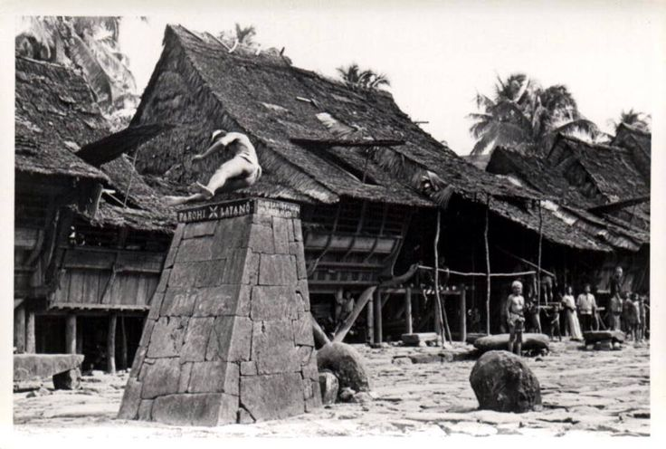
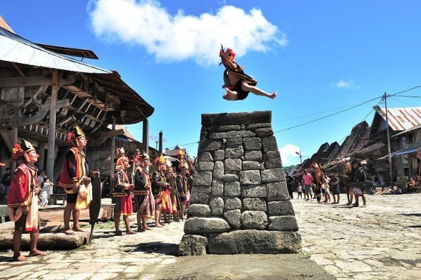
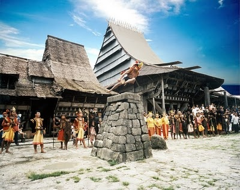
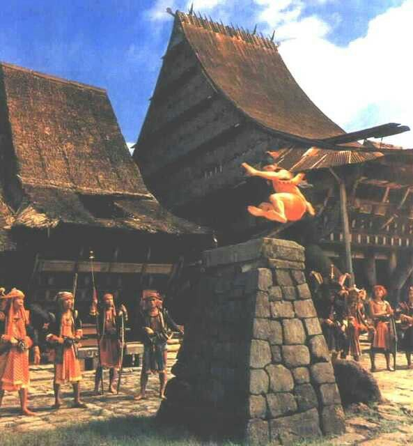
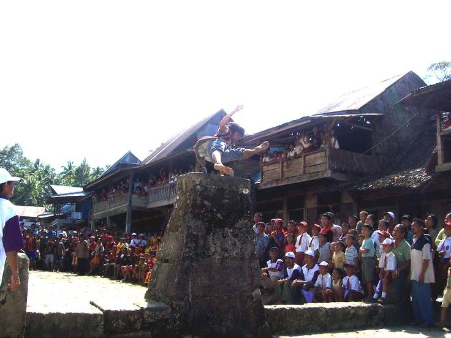
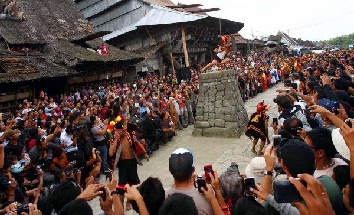
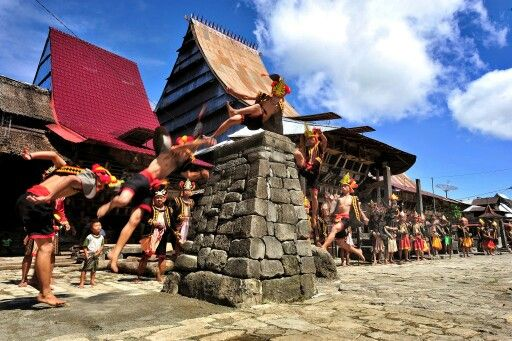
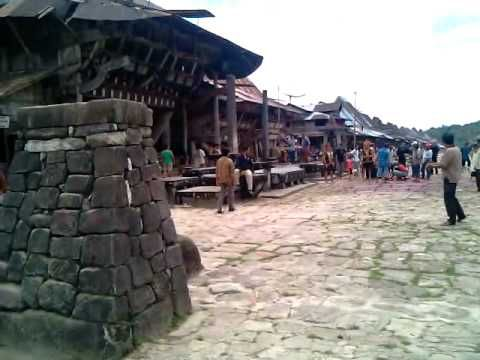

Kumpulan dokumentasi tradisi Hombo Batu yang memperlihatkan keberanian, ketangkasan, dan keindahan budaya masyarakat Nias.

Atraksi Lompat Batu oleh pemuda Nias.

Tradisi simbol kedewasaan.

Melompati batu setinggi ±2 meter.

Dilestarikan hingga sekarang.

Salah satu ikon budaya Nias.

Daya tarik wisata budaya.

Memerlukan latihan dan ketangkasan.

Budaya yang dikenal dunia.